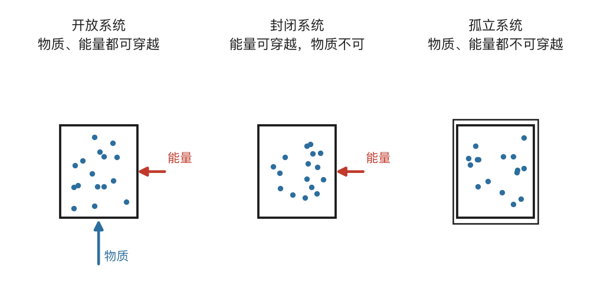
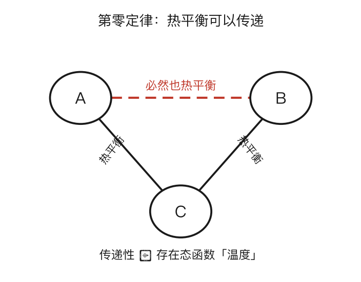
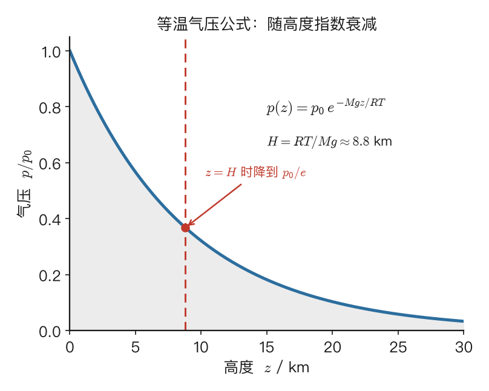
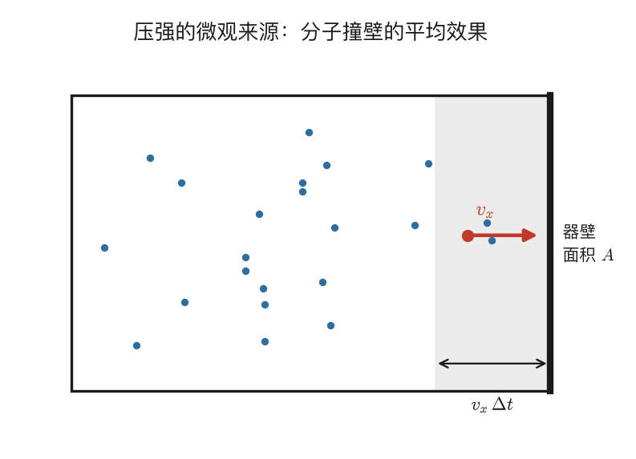
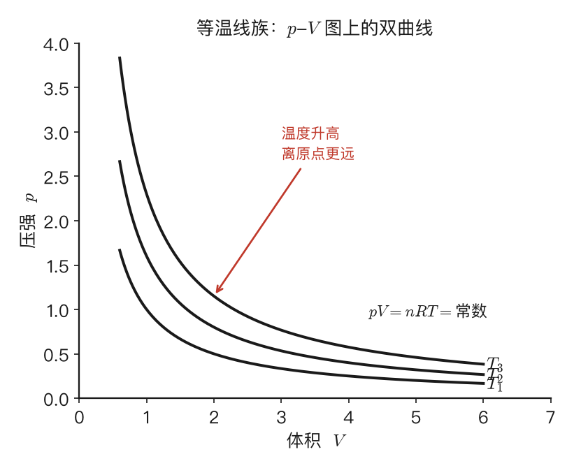

热学基础与温度
1.1 热学的根本问题：从 10²³ 个分子里捞出规律
[!考试权重] 本节为概念理解，选择题偶尔涉及"热力学 vs 统计物理"的区分，不直接出计算。
你在力学里习惯的对象，是一个质点、一根杆、一个刚体——顶多几个、十几个自由度，写下牛顿方程就能精确求解。热学一上来就把你推到一个完全不同的尺度：它面对的是由天文数字量级的微观粒子组成的宏观物体。一摩尔气体里有 $6.022\times10^{23}$ 个分子，你要是想老老实实给每个分子写运动方程，就得同时解 $10^{23}$ 个互相耦合的微分方程——这不是难，这是根本不可能。
于是热学的根本问题就浮出水面：能不能不去追踪每一个粒子，却仍然找到描述整体行为的规律？ 答案不仅是肯定的，而且有点反直觉地美妙——正因为粒子数大到离谱，统计规律反而变得异常精确。单个分子撞向哪里、跑多快完全是随机的，但 $10^{23}$ 个分子的平均行为却稳定得可以写成简洁的方程。这就像你预测不了某一个人明天买不买可乐，却能相当准地预测一座千万人口城市明天的可乐销量。
围绕这个问题，物理学发展出两条互补的路线：
- 热力学：站在宏观视角，干脆不问微观细节，直接从大量实验事实出发，提炼出像第一定律、第二定律、熵这样的普适规律；它告诉你"是什么"，却不解释"为什么"。
- 统计物理（这门课里主要体现为分子动理论）：从大量粒子的力学规律出发，用概率统计把宏观量一个个推导出来；它能回答"为什么"，但推导依赖具体的微观模型假设。
这门课的前三章主要走宏观的热力学路线，第四、五章转入微观的分子动理论，第六章再把两者合到一起。本章正是整个旅程的起点——我们要先把描述系统的语言（系统、状态、平衡、温度）一件件备齐，再搭起理想气体状态方程这块地基，最后第一次把宏观与微观对接起来。
顺便说一句什么叫"热现象"。它泛指一切与物体冷热状态相关的宏观现象：热胀冷缩、相变（冰→水→气）、导热、电阻随温度变化、铁磁体在居里温度以上失去磁性……表面上五花八门，微观本质却是同一件事——大量粒子的无规则热运动。温度高，分子动得猛，宏观上就表现出种种热效应。抓住这条主线，后面纷繁的公式才不会散成一地。
[要点]
- 热学对象是 $\sim10^{23}$ 个粒子的宏观体系；粒子数极大，反而让统计规律异常精确。
- 两条互补路线：热力学（宏观、实验出发、答"是什么"）与统计物理/分子动理论（微观、模型出发、答"为什么"）。
- 一切热现象的微观本质 = 大量粒子的无规则热运动。
1.2 系统、外界与边界：先圈定研究对象
[!考试权重] 选择/判断题常考系统分类（开放/封闭/孤立）。理解"绝热→Q=0""刚性→W=0"对后续计算题至关重要。
力学里做受力分析，第一步永远是"取研究对象"。热学一模一样：你必须先明确你到底在研究什么，否则后面谈能量进出、谈平衡都无从谈起。被你选定的研究对象叫系统，系统以外的一切叫外界，两者的分界面叫边界。边界可以是真实的物理壁（气缸壁），也可以是你想象着画出来的一个面；关键在于一旦选定系统，你就要紧盯着两件事——跨越边界的能量交换（功和热），以及跨越边界的物质交换。
按照边界允许什么穿过，系统分成三类，这个分类会贯穿全课：
| 类型 | 物质交换 | 能量交换 | 例子 |
|---|---|---|---|
| 开放系统 | ✓ | ✓ | 敞口烧杯、正在呼吸的人 |
| 封闭系统 | ✗ | ✓ | 密封气缸（本课主角） |
| 孤立系统 | ✗ | ✗ | 理想保温瓶、整个宇宙 |
这门课九成的时间都在讨论封闭系统——一定量的气体被封在容器里，能和外界换能量，但分子数固定不变。

这里有一个初学者常忽略、却很能体现理解深度的问题：封闭系统物质不进出，能量却能穿过边界，它到底是怎么穿过去的？ 答案是——靠的根本不是粒子穿墙，而是力的作用跨越接触面。做功时，气体分子撞击活塞，活塞受力移动，力乘位移就是功；没有任何分子穿过活塞，但分子的动能通过接触力传给了外界——就像你推墙，手没穿过墙，能量却传了过去。传热时，气体分子撞击导热壁，使壁内原子振动加剧，振动像多米诺骨牌一样沿壁接力传到外侧，外侧分子于是获得能量；全程每个原子都没离开原位。一句话：封闭系统的边界挡得住"有质量的粒子"，却挡不住"力的作用"和"场的传播"——而这恰恰正是能量传递的两种方式。把这一点想透，第二章的功与热就不再是抽象符号。
边界本身也有讲究，而且直接关系到做题时怎么列方程。按是否允许体积变化，分刚性壁（不允许体积变化，因此系统不做膨胀功）和可动壁（如活塞，允许系统做功）；按是否允许传热，分绝热壁（不允许热量通过）和导热壁（允许热交换）；还有只让特定分子通过的半透膜（化学渗透平衡会用到，本课不涉及）。
应试速翻译：题目里看到"绝热"二字，立刻写下 $Q=0$；看到"刚性容器"，立刻写下 $W=0$。这两个翻译能帮你在第二章的计算题里省下大量纠结。2024 真题第 1 大题就涉及这个设定（两个容器、一个活塞、绝热与导热的区分）。
[要点]
- 系统 / 外界 / 边界：先圈定研究对象，再盯住跨边界的能量与物质交换。
- 三类系统：开放（物质、能量都通）、封闭（只通能量）、孤立（都不通）。本课主攻封闭系统。
- 封闭系统的能量靠**力的作用（做功）和振动接力（传热）**穿过边界，不是粒子穿墙。
- 应试翻译：「绝热」$\Rightarrow Q=0$；「刚性容器」$\Rightarrow W=0$。
1.3 状态参量：用什么量来描述一个系统
[!考试权重] "状态量 vs 过程量"是选择题/判断题高频考点；"广延量 vs 强度量"偶尔出现。
圈定了系统，下一步是描述它"现在是什么状态"。描述系统宏观状态的物理量叫状态参量，常见的有压强 $p$（单位 Pa）、体积 $V$（m³）、温度 $T$（K）、内能 $U$（J）、物质的量 $n$（mol）。它们有一条共同的、极其重要的性质：状态参量只取决于系统当前所处的状态，与系统是怎么到达这个状态的路径无关。
打个比方你立刻就懂。你此刻在合肥的海拔是确定的，不管你是从北京坐火车来、还是从上海坐飞机来，海拔就是那个值——海拔是个"状态量"。而你这一路走了多少里程，那叫"过程量"，它取决于你怎么走。这个区分在热学里是生死攸关的：后面你会看到，功 $W$ 和热 $Q$ 都是过程量（依赖路径），而 $U$、$T$、$p$、$V$ 都是状态量。把这条记牢，第二章里"为什么 $\Delta U$ 与过程无关、而 $W$ 与过程有关"就不再费解。
状态参量还能按另一个维度分类，这个分类在判断题里常考：
| 分类 | 定义 | 代表量 | 判断方法 |
|---|---|---|---|
| 广延量 | 与物质多少成正比，有加和性 | $V, U, n, S$ | 系统一分为二，量也减半 |
| 强度量 | 与系统大小无关 | $p, T, \rho$ | 系统一分为二，量不变 |
还有个常用的小结论：两个广延量之比是强度量，比如密度 $\rho=m/V$，质量和体积都是广延量，比值密度却是强度量。
那么，描述一个简单系统到底需要几个独立的状态参量？对于单一组分、无外场的简单系统（比如一定量的理想气体），实验事实告诉我们：只有两个独立的强度量。也就是说，一旦你定下了 $(T,V)$，压强 $p$ 就被唯一确定了，不能再随意取值。这个把它们捆在一起的关系就叫状态方程，一般写成 $f(p,V,T)=0$；对理想气体，它具体就是 $pV=nRT$（下一节细讲）。这个"两个独立变量"的事实，正是后面能在 $p$-$V$ 平面上用一条曲线刻画整个过程的根本原因。
[要点]
- 状态参量只看当前状态、与路径无关：$U,T,p,V$ 是状态量；$W,Q$ 是过程量（关键区分）。
- 广延量（$V,U,n,S$，有加和性）vs 强度量（$p,T,\rho$，与大小无关）；平分判断法；两广延量之比为强度量。
- 单组分简单系统只有两个独立状态参量，被状态方程 $f(p,V,T)=0$ 联系。
1.4 平衡态与准静态过程：让"变化"也能被描述
[!考试权重] ★★ 高频考点。"平衡态 vs 稳态"是经典选择题；"准静态 vs 可逆"几乎每年必考（2024 选择题第 3 题直接考了）。
状态参量虽好，却有个使用前提——它们只有在系统处于平衡态时才有确定的值。所谓平衡态，是指在不受外界影响的条件下，系统的宏观性质不随时间变化的状态。注意这里有两个缺一不可的条件：一是宏观量不随时间改变，二是这种"不变"不依赖外界持续维持。
第二个条件常被忽略，它把平衡态和"稳态"区分开来。设想一根长铁棒，左端插在火里恒温 1000 K、右端暴露在 300 K 的空气中，等足够久之后，棒上每一点的温度都不再变化——这看似"平衡"，其实只是稳态而非平衡态。为什么？因为棒内始终存在温度梯度、始终有热量从左向右流动，而且这种状态全靠外界不停加热来维持，一撤火就变。真正的平衡态要求系统内部处处均匀：没有温度差、没有压强差、没有浓度差。
按均匀的对象不同，平衡又细分为：
- 热平衡：处处同温
- 力学平衡：处处同压、无宏观流动
- 化学平衡（含相平衡）：各组分浓度不再变化
三者同时满足，系统才处于完全的热力学平衡。本课主要关心前两种。
为什么状态参量非得在平衡态才有意义？想象一个正在剧烈膨胀的气体——活塞突然被释放，气体向外猛冲，这时靠近活塞处压强低、远离处压强高，你根本没法用一个数字 $p$ 来描述整个系统的"压强"。只有当系统重新达到平衡，$p$ 在内部处处相同，才谈得上一个确定的压强值。
可问题来了：如果热力学只能谈平衡态，那它岂不是没法研究"变化"了？解决之道是引入一个精巧的理想化——准静态过程：一个进行得无限缓慢的过程，慢到系统在每一瞬间都无限接近平衡态。准静态过程的意义在于：它由一连串平衡态串成，因此能在 $p$-$V$ 图上画出一条确定的曲线；而非准静态过程因为中间没有确定的 $p$，在图上根本画不出来（通常用虚线意思一下）。
现实当然不可能真的无限慢，实用判据是：过程的时间尺度远大于系统恢复平衡的弛豫时间。对气体来说弛豫时间约等于声波穿越容器的时间——容器 10 cm、声速 340 m/s，弛豫时间约 0.3 ms，只要活塞动得比这慢得多，就近似准静态了。
⚠️ 易混辨析：准静态 vs 可逆
这是选择题的常客（2024 真题选择第 3 题就考了），必须分清：
| 准静态过程 | 可逆过程 | |
|---|---|---|
| 核心要求 | 无限缓慢，每步近平衡 | 准静态 且 无耗散 |
| 有摩擦时 | 仍可能是准静态 | 不是可逆 |
| 关系 | 可逆 ⊂ 准静态 | 可逆 → 准静态，反之不一定 |
2024 真题选择第 3 题：关于可逆过程和不可逆过程的判断：(1) 可逆热力学过程一定是准静态过程；(2) 准静态过程一定是可逆过程；(3) 不可逆过程就是不能向相反方向进行的过程；(4) 凡有摩擦的过程，一定是不可逆过程。以上四种判断，正确的是？
答案：D，即 (1)(4)。
(1) ✓：可逆过程一定是准静态的（这是可逆的必要条件之一）。
(2) ✗：有摩擦的准静态过程不可逆——准静态只保证每步近平衡，可逆还要求无耗散。
(3) ✗：不可逆是指不能让系统+外界同时完全复原，而不是说过程不能反向进行（冰箱就是"反向传热"但消耗了功）。
(4) ✓：摩擦把有序能量变成热，这个过程无法无痕恢复。
[要点]
- 平衡态：宏观量不随时间变 且 不依赖外界维持；内部处处均匀（无温差/压差/浓度差）。
- 平衡态 ≠ 稳态：有温度梯度、靠外界维持的（如两端定温的铁棒）只是稳态。
- 状态参量只在平衡态才有确定值。
- 准静态过程：无限缓慢、时刻近平衡，能在 $p$-$V$ 图上画成曲线；判据是过程远慢于弛豫时间。
- 可逆 ⊂ 准静态：可逆还要求无耗散；有摩擦的准静态不可逆。
1.5 温度与第零定律：给"冷热"一个严格的定义
[!考试权重] 概念题偶尔涉及第零定律的表述；温度的定义本身不出计算，但理解它对后面温标、微观意义的推导是前提。
温度是热学里最日常、却也最需要被重新审视的概念。日常里我们靠手感定冷热，但手感靠不住——大冬天摸金属栏杆觉得比摸木头冷得多，可它们的温度其实一样（都等于室外气温），差别只在导热快慢。一个连"和人的感觉绑死"都摆脱不了的量，是没法拿来做定量科学的。所以我们需要一个不依赖人的感觉、也不依赖任何特定物质的温度定义。给出这个定义的，正是听起来像废话、实则深刻的热力学第零定律。
第零定律说的是一个实验事实：如果物体 A 与物体 C 处于热平衡，物体 B 也与物体 C 处于热平衡，那么 A 与 B 之间也必然处于热平衡。乍看像"等量代换"的同义反复，但它保证了一个不平凡的结论——存在一个态函数（我们就管它叫"温度"），使得两个系统处于热平衡当且仅当它们温度相同。换句话说，热平衡是一种等价关系（自反、对称、传递），而正是这种传递性，让我们可以用一个数（温度）去标记每一个"互相热平衡的系统"的类别。没有第零定律，温度计的读数就失去了意义。

至于为什么叫"第零定律"，纯属历史的小尴尬：第一、第二定律早在 19 世纪中期就被发现并命名了，后来人们才意识到温度的定义在逻辑上比它们更基本、理应排在更前面，可"第一"已经被占了，只好委屈它叫"第零"（1930 年代由 Fowler 提出）。
最后再点明"热平衡"的操作含义：两个系统处于热平衡，意思是用导热壁连接后没有净热量流动——注意是"净"，微观上分子仍在碰撞、交换能量，只是 A→B 和 B→A 的热流在统计上恰好相等，宏观上看不出变化而已。
[要点]
- 温度必须独立于人的感觉和具体物质来定义（金属栏杆与木头同温但手感不同）。
- 第零定律：A 与 C 热平衡、B 与 C 热平衡 ⟹ A 与 B 也热平衡。
- 热平衡是等价关系，其传递性保证了态函数「温度」的存在。
- 热平衡 = 用导热壁连接后无净热流（微观仍在交换，统计上相抵）。
1.6 温标：怎么给温度配上一把可靠的尺子
[!考试权重] 温标本身极少出计算题，但"理想气体温标 = 热力学温标"这个结论在第三章卡诺循环中反复使用。了解三相点定义即可。
有了温度的存在性，还得给它配上数字，这就是温标的任务。最朴素的做法叫经验温标：选一种测温物质（水银、酒精、铂电阻），选一个随温度变化的测温属性 $X$（长度、电阻、压强），选两个固定点（冰点、沸点）赋予数值（0 和 100），再假设温度与 $X$ 之间是线性关系 $T=a+bX$。摄氏温标就是这么来的——冰水混合物记 0 °C、标准大气压下的沸水记 100 °C，中间一律假设线性。
问题是，不同测温物质给出的温度并不一致。原因在于各种物质的测温属性与"真正的温度"之间并非严格线性——水银的体积随温度膨胀，但膨胀率本身又随温度变。于是水银温度计和酒精温度计在两点之间或之外却会读出不同的值。经验温标终究依赖测温物质，不够"根本"。
转机来自一个有趣的实验发现：用不同气体做定容气体温度计，当气体越来越稀薄时，不同气体给出的温度读数竟然趋向同一个值。这说明在足够稀薄（接近理想气体）的极限下，温标不再依赖气体种类——这就是理想气体温标的基础。它以水的三相点为基准，定义三相点温度 $T_{tr}=273.16$ K，则任意温度为：
$$T=273.16\text{ K}\times\lim_{p_{tr}\to0}\frac{p}{p_{tr}}$$
这里特意用三相点而非旧标准的冰点/沸点，是因为沸点对气压极其敏感（高原上水不到 100 °C 就开了），而水的三相点（固、液、气三相共存）对应着唯一确定的温度和压强（273.16 K, 611.73 Pa），不依赖外界条件，稳定得多。
有没有彻底不依赖任何物质的温标？有，那就是热力学温标（开尔文温标），它建立在卡诺热机的效率之上（第三章详谈），这里先给结论：可逆热机在高温源 $T_1$ 与低温源 $T_2$ 间工作，效率 $\eta=1-T_2/T_1$，等价地 $T_1/T_2=|Q_1|/|Q_2|$。这给出了温度比值的纯粹定义，且不依赖任何测温物质。好消息是，可以证明理想气体温标和热力学温标在数值上完全一致，所以本课里你尽可放心混用。
常用换算：$T(\text{K})=t(°\text{C})+273.15$，注意温度差不受影响（升高 1 K 等于升高 1 °C）；热力学温标天然给出 $T\geq0$，$T=0$ K 即绝对零度，按热力学第三定律它不可达到、只能无限逼近。
[要点]
- 经验温标（选测温物质+属性+两固定点+线性假设）依赖物质，不同物质读数不一致。
- 理想气体温标：气体稀薄极限下与种类无关；以水的三相点 273.16 K 为基准。
- 热力学温标（开尔文）基于卡诺效率 $\eta=1-T_2/T_1$，不依赖任何物质；与理想气体温标数值一致。
- 换算 $T(\mathrm K)=t(°\mathrm C)+273.15$；温度差 $1\text{ K}=1°\text{C}$；绝对零度 $0$ K 不可达。
1.7 理想气体状态方程：全章的地基
[!考试权重] ★★★ 极高频。状态方程是几乎所有计算题的起点，混合气体分压、密度形式、等温气压公式都直接出过大题。
现在我们要浇筑整门课最基础的一块地基——理想气体状态方程。后面几乎每一个计算都要踩在它上面。它并非凭空而来，而是历史上三条实验定律的统一：
- 玻意耳定律（1662）：温度恒定时 $pV=$ 常数。微观解释：温度不变 → 分子平均速率不变，体积缩小 → 分子数密度增大 → 撞壁更频繁 → 压强升高。
- 查理定律（1802）：体积恒定时 $p/T=$ 常数。微观解释：体积不变 → 分子数密度不变，温度升高 → 分子动得更快 → 每次撞壁冲量更大 → 压强升高。
- 盖-吕萨克定律：压强恒定时 $V/T=$ 常数。微观解释：要维持压强不变，温度升高带来的"更猛的撞击"必须靠体积膨胀、稀释分子数密度来抵消。
把三者合起来，再加上阿伏伽德罗定律（同温同压同体积含分子数相同），就得到了
$$\boxed{pV = nRT}$$
先把每个符号拆开讲清楚，这样后面用起来不会混：
- $p$：气体压强（单位 Pa = N/m²）
- $V$：气体体积（单位 m³。注意 1 L = $10^{-3}$ m³，这是考试最常踩的单位坑）
- $n$：气体的物质的量（单位 mol）。$n = m/M$，其中 $m$ 是气体总质量、$M$ 是摩尔质量（kg/mol）。也可以写成 $n = N/N_A$（$N$ 是分子总数、$N_A = 6.022\times10^{23}$ mol$^{-1}$ 是阿伏伽德罗常数）
- $T$：热力学温度（单位 K，开尔文）。不是摄氏度！代入公式前必须换算 $T = t(°\text{C}) + 273.15$
- $R$：普适气体常数，$R = 8.314$ J/(mol·K)。"普适"的意思是它对所有理想气体都一样，不挑气体种类。它的物理意义是"1 mol 理想气体温度升高 1 K 时，在等压下对外做的功"（由 Mayer 关系 $C_p - C_V = R$ 可看出）
一个记忆技巧：$pV = nRT$ 左边是"力学量"（压强×体积 = 能量），右边是"热学量"（物质的量×气体常数×温度 = 能量），两者相等正是"宏观力学和微观热运动的桥"。
等价形式（必须全记住）
| 形式 | 公式 | 适用场景 |
|---|---|---|
| 摩尔形式 | $pV=nRT$ | 已知物质的量时（最常用） |
| 分子数形式 | $pV=NkT$ | 微观分析（$k=1.381\times10^{-23}$ J/K） |
| 数密度形式 | $p=nkT$（$n=N/V$） | 讨论压强微观来源 |
| 密度形式 | $p=\rho RT/M$ | 已知密度不知体积（大气物理等） |
"理想"意味着什么
它是一个模型，做了两条理想化假设：
- 分子是质点——分子自身体积远小于分子间平均距离，可以忽略
- 分子间无相互作用——除碰撞瞬间外，分子之间既不吸引也不排斥
什么时候真实气体可近似为理想？温度足够高（分子动能远超分子间势能）、压强足够低（分子间距远超分子尺寸）时。定量判据是压缩因子 $Z=pV/(nRT)$ 接近 1。
理想气体还有一条后面反复要用的重要性质——它的内能只是温度的函数，$U=U(T)$，与体积、压强无关。原因正是分子间无相互作用因而没有势能，内能全部来自分子动能、而动能只由温度决定（这是焦耳实验的结论，第二章详谈）。
道尔顿分压定律
容器里若有多种理想气体（空气就是氮、氧等的混合），第 $i$ 种气体的分压 $p_i$ 定义为它单独占据整个容器时产生的压强 $p_i=n_iRT/V$，而总压等于各分压之和：
$$p=\sum_i p_i, \qquad \frac{p_i}{p}=\frac{n_i}{\sum n_i}=x_i\text{（摩尔分数）}$$
它成立的理由很干净：理想气体分子间无相互作用，氮分子撞壁的贡献根本不在乎旁边有没有氧分子，每种气体"各撞各的"。
等温气压公式
前面的状态方程都在讨论"一个容器里的气体"。但如果把视野放大到整个大气层呢？大气在重力场中分布，高处的空气稀薄、低处的空气稠密——这恰好是状态方程的一个漂亮应用。
思路是这样的：取高度 $z$ 处一个水平薄层（面积 $A$、厚 $dz$），它上下两面的压强差来自这层气体自身重量的贡献。下面压强稍大（要托住上面的空气），上面稍小。列力平衡：
$$p(z)\cdot A - p(z+dz)\cdot A = \rho g A\,dz$$
即 $dp = -\rho g\,dz$（负号说明压强随高度增加而下降）。
现在需要把密度 $\rho$ 消掉。用密度形式的状态方程 $p = \rho RT/M$，解出 $\rho = pM/(RT)$，代入得：
$$dp = -\frac{pMg}{RT}\,dz$$
分离变量：$\dfrac{dp}{p} = -\dfrac{Mg}{RT}\,dz$
两边积分（假设温度 $T$ 处处相同，即"等温"假设）：
$$\int_{p_0}^{p}\frac{dp'}{p'} = -\frac{Mg}{RT}\int_0^z dz'$$
$$\ln\frac{p}{p_0} = -\frac{Mgz}{RT}$$
取指数得到等温气压公式：
$$\boxed{p(z)=p_0\exp\!\left(-\frac{Mgz}{RT}\right)}$$
它说气压随海拔指数衰减。定义特征高度（标高）$H = RT/(Mg)$：当 $z = H$ 时气压降为地面值的 $1/e \approx 37\%$。对空气（$M\approx0.029$ kg/mol）在 $T=300$ K 时，$H = 8.314\times300/(0.029\times9.8) \approx 8.8$ km——和真实大气的标高量级吻合。
注意这个推导的两个关键假设：(1) 大气是理想气体；(2) 温度处处相同（等温）。实际大气温度随高度下降（约 6.5 K/km），所以公式在大尺度上只是近似。不过它的物理图像——重力把分子往下拽、热运动把分子往上抛、两者平衡后高处分子指数减少——是完全正确的，这个图像在第四章 Boltzmann 分布中会被推广到任意势能场。

[要点]
- 理想气体状态方程 $pV=nRT$（$R=8.314$ J/(mol·K)），三条实验定律 + 阿伏伽德罗定律的统一。
- 等价形式：$pV=NkT$、$p=nkT$（$n$=数密度）、$p=\rho RT/M$。
- 「理想」= 分子是质点 + 分子间无相互作用；高温低压时近似成立。
- 理想气体内能只随温度 $U=U(T)$。
- 道尔顿分压：$p=\sum p_i$，$p_i=x_i p$。等温气压公式 $p(z)=p_0e^{-Mgz/RT}$。
1.8 压强的微观解释：分子一下下撞出来的力
[!考试权重] ★★★ 压强公式 $p=\frac{2}{3}n\bar\varepsilon_k$ 是后续推导温度微观意义的关键，也是选择题/问答题的常客。2024 问答题第 1 题直接考"从微观角度解释两种压强增大的区别"。
到这里，我们一直把压强当成一个宏观给定的量。但分子动理论要追问得更深：这个"单位面积上的力"究竟从哪来？答案是大量气体分子不停撞击器壁，每次碰撞都给壁一个微小冲量，宏观上这些冲量的平均效果就是一个恒定的压力，即压强。下面把这个图像变成公式——这是本章第一次真正的"微观推导"，每一步都值得吃透。
模型假设
我们对理想气体作几条标准假设：
- 容器里有 $N$ 个相同分子，每个质量 $m$
- 分子做无规则运动、方向完全随机（各向同性）
- 一切碰撞都是弹性碰撞（动能守恒）
- 速度分布不随时间变（平衡态）
- 分子自身体积可忽略
第一步：单个分子撞壁给了器壁多大冲量？
取容器一面壁，面积 $A$，垂直壁面方向取为 $x$ 轴（向外为正）。一个以速度分量 $v_x > 0$ 飞向壁面的分子：
- 碰前 $x$ 方向动量：$+mv_x$
- 弹性碰后（完美反弹）：$-mv_x$
- 分子动量变化：$-2mv_x$（朝内翻转了）
- 由牛顿第三定律，分子给壁的冲量：$\Delta I = +2mv_x$
第二步：$\Delta t$ 时间内有多少分子撞上这面壁？
想象所有速度 $x$ 分量恰好在 $v_x$ 到 $v_x + dv_x$ 之间的分子。一个这样的分子要在 $\Delta t$ 内撞到壁，它必须满足两个条件：(1) 朝壁飞（$v_x > 0$）；(2) 距壁不超过 $v_x\Delta t$（否则飞不到）。
这些分子恰好落在一个贴着壁面的柱体内——底面积 $A$、高 $v_x\Delta t$、体积 $A\cdot v_x\Delta t$。

设 $n = N/V$ 是分子数密度，$f(v_x)$ 是 $v_x$ 的归一化分布函数，则这个柱体内速度分量在 $v_x\sim v_x+dv_x$ 范围的分子数为：
$$dN = n\cdot f(v_x)\,dv_x \cdot A\,v_x\Delta t$$
第三步：这些分子给壁的总冲量
每个分子给壁冲量 $2mv_x$，$dN$ 个分子总共给壁的冲量：
$$d(\text{总冲量}) = dN\cdot 2mv_x = 2mn\,A\,v_x^2\,f(v_x)\,dv_x\,\Delta t$$
第四步：对所有 $v_x > 0$ 积分，得到压强
压强 = 总冲量 / (面积 × 时间)：
$$p = \frac{1}{A\,\Delta t}\int_0^{\infty}2mn\,A\,v_x^2\,f(v_x)\,dv_x\,\Delta t = 2mn\int_0^{\infty}v_x^2\,f(v_x)\,dv_x$$
现在利用 $f(v_x)$ 关于 $v_x = 0$ 对称（向左飞和向右飞的分子一样多）。这意味着：
$$\int_0^\infty v_x^2\,f(v_x)\,dv_x = \frac{1}{2}\int_{-\infty}^{\infty}v_x^2\,f(v_x)\,dv_x = \frac{1}{2}\overline{v_x^2}$$
代入得：$p = 2mn\cdot\frac{1}{2}\overline{v_x^2} = mn\overline{v_x^2}$
第五步：用各向同性化简
没有哪个方向特殊（气体是各向同性的），三个方向的速度平方平均相等：
$$\overline{v_x^2} = \overline{v_y^2} = \overline{v_z^2}$$
而速率的平方 $v^2 = v_x^2 + v_y^2 + v_z^2$，取平均得 $\overline{v^2} = 3\overline{v_x^2}$，即 $\overline{v_x^2} = \frac{1}{3}\overline{v^2}$。代入：
$$\boxed{p = \frac{1}{3}nm\overline{v^2} = \frac{2}{3}n\overline{\varepsilon_k}}$$
其中 $\overline{\varepsilon_k} = \frac{1}{2}m\overline{v^2}$ 是单个分子的平均平动动能。
物理图像
这个结果干干净净地说：压强由两个因素相乘决定——
- 数密度 $n$：单位体积分子数越多，单位时间撞壁的分子越多，压强越大
- 平均动能 $\overline{\varepsilon_k}$：分子动能越大，每次撞击给壁的冲量越大，压强也越大
用一句口诀记：压强 = 撞的个数 × 撞的力度。这个图像能直接解释很多定性问题——温度不变缩体积，$n$ 增大但 $\overline{\varepsilon_k}$ 不变（撞得多了）；体积不变升温，$n$ 不变但 $\overline{\varepsilon_k}$ 增大（撞得狠了）。
🎯 真题实战：2024 问答题第 1 题
题目：一定质量的理想气体，温度不变时其压强随体积减小而增大；体积不变时其压强随温度升高而增大。请从微观角度解释这两种压强增大有何区别。
答题要点：
- 温度不变、体积减小 → 分子平均速率不变（单次撞壁冲量不变）→ 但分子数密度 $n$ 增大 → 单位时间碰壁分子数增多 → 压强增大
- 体积不变、温度升高 → 分子数密度 $n$ 不变（碰壁频率的"人数"不变）→ 但分子平均速率增大 → 单次撞壁冲量增大 → 压强增大
本质区别：前者是"撞的次数多了"，后者是"每次撞得狠了"。
[要点]
- 压强的微观本质 = 大量分子撞壁冲量的平均效果；单分子弹性撞壁冲量 $2mv_x$。
- 推导五步：模型假设 → 单分子冲量 $2mv_x$ → 柱体计数 → 对 $v_x>0$ 积分 → 各向同性 $\overline{v_x^2}=\frac{1}{3}\overline{v^2}$。
- 结论 $p=\frac{1}{3}nm\overline{v^2}=\frac{2}{3}n\overline{\varepsilon_k}$：压强 = 数密度 × 平均平动动能 × 2/3。
- 口诀：压强 = 撞的个数 × 撞的力度。
1.9 温度的微观意义：原来温度是动能的尺度
[!考试权重] ★★★ $\overline{\varepsilon_k}=\frac{3}{2}kT$ 和方均根速率是必背公式，选择题/计算题高频。
上一节我们从微观一侧得到了 $p=\tfrac23 n\overline{\varepsilon_k}$，而从宏观一侧有 $p=nkT$。同一个压强，两个表达式，把它们一摆平——
$$nkT=\frac{2}{3}n\overline{\varepsilon_k}\quad\Longrightarrow\quad \boxed{\overline{\varepsilon_k}=\frac{1}{2}m\overline{v^2}=\frac{3}{2}kT}$$
数密度 $n$ 干脆利落地约掉了，剩下一个朴素却深刻的结论：温度，本质上就是分子平均平动动能的度量。温度越高，分子平均动得越快；$T=0$ K 时平均平动动能为零（经典图像下分子静止）。要特别强调，温度和单个分子无关，它是大量分子统计平均的体现。
方均根速率
从 $\overline{\varepsilon_k}=\tfrac32 kT$ 解出：
$$\boxed{v_{rms}=\sqrt{\overline{v^2}}=\sqrt{\frac{3kT}{m}}=\sqrt{\frac{3RT}{M}}}$$
代个数感受一下：常温 300 K 下氮分子（$M=0.028$ kg/mol）的方均根速率约 517 m/s，比声速还快。气体分子在微观尺度上其实在高速狂奔，你之所以毫无察觉，是因为它们方向随机、宏观上互相抵消。
重要推论：平均平动动能与质量无关
$\overline{\varepsilon_k}=\tfrac32 kT$ 里压根没出现分子质量 $m$，这意味着同一温度下所有种类的理想气体分子平均平动动能都相同——重分子动得慢、轻分子动得快，但 $\tfrac12 m\overline{v^2}$ 完全一样。这正是温度能当普适标度的根由：它不挑你用什么气体来测。
适用范围：$\overline{\varepsilon_k}=\tfrac32 kT$ 只针对平动动能（3 个平动自由度）；对有转动、振动的分子，总能量不止 $\tfrac32 kT$，但平动那部分仍然是 $\tfrac32 kT$——完整图景由第四章的能量均分定理给出。
[要点]
- 令宏观 $p=nkT$ 与微观 $p=\tfrac23 n\overline{\varepsilon_k}$ 相等 ⟹ 温度是分子平均平动动能的度量 $\overline{\varepsilon_k}=\tfrac32 kT$。
- 方均根速率 $v_{rms}=\sqrt{3kT/m}=\sqrt{3RT/M}$；室温氮分子 $\sim517$ m/s。
- 同温下各种气体分子平均平动动能相同（与质量无关）；重者慢、轻者快。
- 此式只管平动（3 自由度）；转动振动另算（见第 4 章能量均分）。
1.10 分子碰撞频率与平均自由程
[!考试权重] ★★ 2024 选择题第 1 题直接考了"定容时 λ 和 Z 随温度的变化"。公式必须记牢，推导思路更要理解。
在讨论完压强和温度的微观图像后，还有一组量值得在这里介绍——它们描述的是分子之间的碰撞行为，是第五章输运过程的基础，也是选择题的常客。
你可能会好奇：分子速率那么快（氮分子约 500 m/s），为什么气味的扩散却慢得像蜗牛？答案就在这里——分子虽然飞得快，但它走的是"醉汉的路"，每飞一小段就被别的分子撞偏方向。两次碰撞之间走过的那一小段距离，就是平均自由程。
碰撞截面：什么算"撞上了"
把分子简化为直径 $d$ 的硬球。当两个分子的中心距离小于 $d$（两球相切或重叠），就算发生了一次碰撞。
想象一个分子在飞行：它像一个直径为 $d$ 的球在前进，只要别的分子的中心落在它前进路线周围半径 $d$ 的范围内，就会被它"扫到"。所以这个分子飞行时实际上扫出了一条横截面积为 $\sigma = \pi d^2$ 的柱体——$\sigma$ 就叫碰撞截面。
平均碰撞频率 $\bar Z$：推导
假设只有我们关注的这一个分子在动，其他分子都不动（后面修正这个假设）。那么这个分子在 $\Delta t$ 时间内飞过路程 $\bar v \Delta t$，扫过的柱体体积为：
$$\text{扫过体积} = \sigma \cdot \bar v \Delta t = \pi d^2 \bar v \Delta t$$
这个柱体内有多少个"靶分子"？数密度为 $n$，所以：
$$\text{碰撞次数} = n \cdot \pi d^2 \bar v \Delta t$$
单位时间碰撞次数（即碰撞频率）：
$$\bar Z_{粗糙} = n\pi d^2 \bar v$$
但这里有个问题：我们假设了其他分子不动，实际上它们也在乱飞。当两个分子迎面飞来时，相对接近的速度比单个分子速率更大；当同向飞行时又更小。正确的做法是把"分子速率 $\bar v$"替换为"平均相对速率 $\overline{v_{rel}}$"。
可以严格证明（用 Maxwell 分布积分），对于同种分子：
$$\overline{v_{rel}} = \sqrt{2}\,\bar v$$
直觉上理解：如果两个分子速率都是 $\bar v$，方向随机，它们的相对速度矢量的大小平均而言是 $\sqrt{2}\,\bar v$（就像两个速度相同的矢量夹角平均后合成的结果）。代入得精确的碰撞频率：
$$\boxed{\bar Z = \sqrt{2}\,n\pi d^2 \bar v}$$
其中 $\bar v = \sqrt{8kT/(\pi m)}$ 是平均速率（第四章详推，这里先直接用）。
平均自由程 $\bar\lambda$：推导
平均自由程 = 两次碰撞之间平均飞过的距离 = 总路程 / 碰撞次数：
$$\bar\lambda = \frac{\bar v}{\bar Z} = \frac{\bar v}{\sqrt{2}\,n\pi d^2 \bar v} = \frac{1}{\sqrt{2}\,n\pi d^2}$$
注意一个漂亮的结果：$\bar\lambda$ 与速率 $\bar v$ 无关！ $\bar v$ 在分子分母中约掉了。平均自由程只取决于分子数密度 $n$ 和分子直径 $d$。
这很合理：分子飞得快，单位时间撞的次数多，但每两次碰撞之间也飞得远——两者恰好抵消，净效果只看"空间有多拥挤"（$n$）和"分子有多胖"（$d$）。
用状态方程改写：看温度和压强的影响
$\bar\lambda = 1/(\sqrt{2}\,n\pi d^2)$ 里的 $n$ 可以用状态方程 $p = nkT$ 换掉：
$$\boxed{\bar\lambda = \frac{kT}{\sqrt{2}\,\pi d^2 p}}$$
这个形式一眼就能看出各种依赖关系：
| 条件 | $n$ 怎么变 | $\bar v$ 怎么变 | $\bar\lambda$ 怎么变 | $\bar Z$ 怎么变 |
|---|---|---|---|---|
| 定容升温 | 不变 | $\uparrow$（$\propto\sqrt T$） | 不变 | $\uparrow$（$\propto\sqrt T$） |
| 定压升温 | $\downarrow$（$\propto 1/T$） | $\uparrow$ | $\uparrow$（$\propto T$） | 不变 |
| 定温加压 | $\uparrow$（$\propto p$） | 不变 | $\downarrow$（$\propto 1/p$） | $\uparrow$（$\propto p$） |
定容升温那行是最常考的——温度升高了，分子跑得更快，碰得更频繁（$\bar Z$ 增大），但因为 $n$ 没变、空间拥挤程度不变，每两次碰撞之间走的距离还是一样远（$\bar\lambda$ 不变）。
定压升温也很有意思——升温让分子跑得快了，$\bar Z$ 本该增大；但升温同时让气体膨胀（定压嘛），$n$ 减小了，两者恰好抵消，$\bar Z$ 不变。
🎯 真题实战：2024 选择题第 1 题
题目：一定量的某种理想气体若体积保持不变，则其平均自由程 $\bar\lambda$ 和平均碰撞频率 $\bar Z$ 与温度的关系是？ A. 温度升高，$\bar\lambda$ 减少而 $\bar Z$ 增大 B. 温度升高，$\bar\lambda$ 保持不变而 $\bar Z$ 增大 C. 温度升高，$\bar\lambda$ 和 $\bar Z$ 均增大 D. 温度升高，$\bar\lambda$ 增大而 $\bar Z$ 减小
答案：B。
- 定容 → $n$ 不变 → $\bar\lambda = 1/(\sqrt2 n\pi d^2)$ 不变（和 $T$ 无关）
- $\bar Z = \sqrt2 n\pi d^2 \bar v$，其中 $\bar v \propto \sqrt T$ → $\bar Z$ 增大
简记：定容时"路上的障碍物密度没变，所以自由程不变；但自己跑得快了，所以单位时间撞得多了"。
数量级感受
标准状况下氮分子（$d\approx 3.5\times10^{-10}$ m，$n\approx 2.7\times10^{25}$ m$^{-3}$）：
- 碰撞截面 $\sigma = \pi d^2 \approx 3.8\times10^{-19}$ m²
- 平均碰撞频率 $\bar Z \approx 6.5\times10^9$ 次/秒（每秒碰 65 亿次！）
- 平均自由程 $\bar\lambda \approx 6.9\times10^{-8}$ m $\approx 69$ nm（约为分子直径的 200 倍）
这组数字解答了开头的问题：分子以 500 m/s 狂飞，但每飞 69 nm（远小于你能看见的尺度）就被撞偏一次方向。宏观上气味的扩散是一个随机游走过程——每步只有 69 nm，1 秒走了亿万步，净位移却只有几毫米。这就是为什么扩散远慢于分子速率。
[要点]
- 碰撞截面 $\sigma = \pi d^2$：分子飞行扫过的有效截面。
- 平均碰撞频率 $\bar Z = \sqrt2\,n\pi d^2 \bar v$：$\sqrt2$ 来自相对速率。
- 平均自由程 $\bar\lambda = 1/(\sqrt2\,n\pi d^2) = kT/(\sqrt2\,\pi d^2 p)$：与速率无关，只看密度和直径。
- 定容升温：$\bar\lambda$ 不变，$\bar Z \propto \sqrt T$ 增大。
- 定压升温：$\bar\lambda \propto T$ 增大，$\bar Z$ 不变。
- 标准状况空气：$\bar\lambda\approx69$ nm，$\bar Z\approx6.5\times10^9$/s。
1.11 p-V 图与等温线：把过程画出来
[!考试权重] ★ p-V 图是第二、三章所有循环/过程计算的基础工具，本节建立图像直觉。
整门热学里最常用的一张图，是横轴体积 $V$、纵轴压强 $p$ 的 $p$-$V$ 图。它的好处在 1.3、1.4 节其实已经埋好了：一个平衡态对应图上的一个点，一个准静态过程对应图上的一条曲线。于是抽象的"过程"就变成了可以看、可以算面积的几何对象——到第二章算功时会大放异彩（功 = 曲线下面积）。
图上温度恒定的曲线叫等温线。对理想气体，$pV=nRT=$ 常数，即 $p=nRT/V$，这是一条双曲线（反比例函数）。不同温度给出不同的等温线，温度越高，等温线离原点越远；而且等温线族互不相交，因为每个 $(p,V)$ 点只对应唯一的 $T=pV/(nR)$。
几种特殊过程在图上的表现：
- 等压过程（$p$ 不变）→ 水平线
- 等容过程（$V$ 不变）→ 竖直线
- 绝热过程 → 比等温线更陡的曲线（$pV^\gamma = $ 常数，第二章详推）

一个重要的图像直觉（2024 选择题第 4 题用到）：从同一初态出发，体积增大一倍，等温线下面积（做功）介于等压和绝热之间。等压过程温度升高最多（$T_2 = 2T_1$），等温过程温度不变，绝热过程温度降低。
[要点]
- $p$-$V$ 图：平衡态 = 一个点，准静态过程 = 一条曲线。
- 等温线：$p=nRT/V$ 双曲线；$T$ 越高离原点越远；互不相交。
- 等压 = 水平线；等容 = 竖直线；绝热比等温更陡。
1.12 实际气体一瞥：范德瓦尔斯方程
[!考试权重] ★★ 范德瓦尔斯方程本身不复杂，但 2024 压轴题（第 5 题，16 分）就是范氏气体自由膨胀求内能、温度变化和熵变。必须掌握方程形式和两个修正的物理意义。
理想气体是个简化模型，温度低、压强高时真实气体就会偏离它。偏差来自两处，恰好对应理想假设的两条：
| 修正项 | 物理原因 | 效果 |
|---|---|---|
| $a/V_m^2$（压强修正） | 分子间有吸引力，靠近壁面的分子被内部拉回 | 实际压强比理想值偏低 |
| $b$（体积修正） | 分子有体积，可活动空间比容器小 | 可用体积为 $V_m - b$ |
范德瓦尔斯（1873）针对这两点对理想气体方程各打一个补丁：
$$\boxed{\left(p+\frac{a}{V_m^2}\right)(V_m-b)=RT}$$
其中 $V_m=V/n$ 是摩尔体积，$a$、$b$ 是与气体种类有关的常数。
重要拓展：范氏气体的内能
利用第三章将会推导的公式 $(\partial U/\partial V)_T = T(\partial p/\partial T)_V - p$，代入范氏方程可以得到：
$$dU = C_V dT + \frac{a}{V_m^2}dV$$
积分得 1 mol 范氏气体的内能：
$$U = C_V T - \frac{a}{V_m} + \text{const.}$$
这说明范氏气体的内能不仅取决于温度，还取决于体积（因为分子间有势能）。这是它与理想气体的本质区别，也是 2024 压轴题的核心。
[要点]
- 真实气体在低温高压下偏离理想，因为理想的两条假设失效。
- 两处修正：分子有体积（参数 $b$）+ 分子间有吸引力（参数 $a/V_m^2$）。
- 范德瓦尔斯方程 $\left(p+\dfrac{a}{V_m^2}\right)(V_m-b)=RT$。
- 范氏气体内能 $U = C_V T - a/V_m + \text{const.}$（与体积有关！）。
1.13 例题精讲与真题实战
覆盖本章计算大题的主要类型。每题先点明思路再算。
例题 1：状态方程与密度形式
题目：一个 $V=20$ L 的刚性容器装有 $T=300$ K、$p=2.0\times10^5$ Pa 的某理想气体，测得其质量为 $112$ g。求 (1) 气体的物质的量；(2) 摩尔质量，并判断它可能是什么气体。
思路：刚性容器、给了 $p,V,T$，直接用 $pV=nRT$ 求 $n$；再用 $M=m/n$ 求摩尔质量。这类题的关键只是单位统一（$V$ 换成 m³）。
解答：$n=\dfrac{pV}{RT}=\dfrac{2.0\times10^5\times20\times10^{-3}}{8.314\times300}\approx1.60$ mol。摩尔质量 $M=\dfrac{m}{n}=\dfrac{112\text{ g}}{1.60\text{ mol}}=70$ g/mol，接近 $\mathrm{Cl_2}$（71 g/mol），故很可能是氯气。
例题 2：方均根速率与平均平动动能
题目：求 $T=300$ K 时氢气分子（$M=2.0\times10^{-3}$ kg/mol）的方均根速率，以及单个分子的平均平动动能。再问：同温下氧气（$M=32\times10^{-3}$）分子的平均平动动能是它的几倍？
思路：$v_{rms}=\sqrt{3RT/M}$ 直接代；平均平动动能 $\overline{\varepsilon_k}=\tfrac32 kT$ 与气体种类无关——最后一问其实是个"陷阱"，答案是相等。
解答：$v_{rms}=\sqrt{\dfrac{3\times8.314\times300}{2.0\times10^{-3}}}\approx1.93\times10^{3}$ m/s。平均平动动能 $\overline{\varepsilon_k}=\tfrac32 kT=\tfrac32\times1.381\times10^{-23}\times300\approx6.2\times10^{-21}$ J。氧气分子平均平动动能与氢气完全相同（都是 $\tfrac32 kT$），是 1 倍——重分子只是动得慢（$v_{rms}\propto1/\sqrt M$），动能并不小。
例题 3：道尔顿分压（混合气体）
题目：一容器中混有 $2$ mol 氮气和 $3$ mol 氧气，温度 $300$ K、体积 $V=50$ L。求总压强，以及氮气、氧气各自的分压。
思路：先用总物质的量求总压 $p=(n_{总})RT/V$，再用分压比等于摩尔分数 $p_i=x_i p$。
解答：$n_{总}=5$ mol，总压 $p=\dfrac{5\times8.314\times300}{50\times10^{-3}}\approx2.49\times10^5$ Pa。摩尔分数 $x_{N_2}=2/5=0.4$、$x_{O_2}=3/5=0.6$，故 $p_{N_2}=0.4p\approx1.0\times10^5$ Pa、$p_{O_2}=0.6p\approx1.5\times10^5$ Pa，两者之和正好等于总压。
🎯 真题 4：2024 计算第 1 题（两容器混合）
题目：两个贮着空气的容器 A 和 B，以带有活塞的细管相连接。容器 A 浸入 $t_1=100°$C 的水槽中，容器 B 浸入 $t_2=-20°$C 的冷却剂中。初始时活塞将两容器分开，$p_1=5.33\times10^4$ Pa，$p_2=2.00\times10^4$ Pa，$V_1=2.5\times10^{-4}$ m³，$V_2=4\times10^{-4}$ m³。打开活塞后：(1) 维持与热源接触；(2) 与热源隔绝。求两种情况下的末态压强。
核心思路：理想气体状态方程 + 物质的量守恒 + 能量守恒。
解答(1)：维持热源接触，温度不变。打开活塞后压强平衡为 $p$：
$$\frac{pV_1}{T_1} + \frac{pV_2}{T_2} = \frac{p_1V_1}{T_1} + \frac{p_2V_2}{T_2}$$
$$p = \frac{p_1V_1T_2 + p_2V_2T_1}{V_1T_2 + V_2T_1} \approx 2.99\times10^4 \text{ Pa}$$
解答(2)：绝热隔绝，由能量守恒 $n_1 C_V(T_1-T) = n_2 C_V(T-T_2)$：
$$T = \frac{(p_1V_1 + p_2V_2)T_1T_2}{p_1V_1T_2 + p_2V_2T_1}$$
再由物质的量守恒：$p = \dfrac{p_1V_1 + p_2V_2}{V_1 + V_2} \approx 3.28\times10^4$ Pa。
关键区别：有热源 → 温度不变用"等温条件"；绝热 → 用"内能守恒"求共同温度。
1.14 概念辨析
温度高的物体一定"含有更多热量"吗？ 不对。"热量"不是物体"拥有"的东西——$Q$ 是能量传递的方式、是过程量，物体拥有的是内能 $U$。况且内能和温度也不是简单正比：1 kg 100 °C 的水，内能远大于 1 g 200 °C 的水蒸气。
分子速率都等于 $v_{rms}$ 吗？ 不是。$v_{rms}$ 是所有分子速率平方平均再开方得到的一个统计特征值，实际分子速率有一个分布（Maxwell 分布，第四章细讲）：有的很快、有的很慢，$v_{rms}$ 只是其中一个代表值。
0 °C 时分子停止运动了吗？ 没有。0 °C = 273.15 K，平均动能 $\tfrac32 k\times273.15\approx5.7\times10^{-21}$ J，分子仍在剧烈运动，氮分子此时方均根速率约 493 m/s。只有绝对零度（0 K = −273.15 °C）在经典理论下才对应运动停止。
理想气体状态方程适用于液体和固体吗？ 不适用。液体和固体中分子紧密排列、相互作用力强，理想气体的两条假设都不满足。
"准静态"就是"可逆"吗？ 不完全等价（见 1.4 节辨析）。可逆一定准静态，但准静态不一定可逆（如有摩擦的准静态压缩）。
等温气压公式里假设了什么？ 假设大气温度处处相同（等温）且为理想气体。实际大气温度随高度下降（约 6.5 K/km），所以严格地说公式只在小高度范围内近似成立。2024 选择题第 5 题就涉及"温度随高度变化"与"温度不变"两种情况下气球浮力的区别。
1.15 公式速查卡
考前最后扫一遍。★ 必背直接套，○ 理解即可。
理想气体状态方程族 ★
$$pV=nRT=NkT,\qquad p=nkT\ (n\text{ 为数密度}),\qquad p=\frac{\rho RT}{M}$$
常数：$R=8.314$ J/(mol·K)，$k=1.381\times10^{-23}$ J/K，$N_A=6.022\times10^{23}$ mol$^{-1}$，且 $k=R/N_A$。
道尔顿分压 ★：$p=\sum_i p_i$，$p_i=x_i p$。
等温气压公式 ○：$p(z)=p_0e^{-Mgz/RT}$，特征高度 $H=RT/(Mg)$。
压强的微观表达 ★
$$p=\frac{1}{3}nm\overline{v^2}=\frac{2}{3}n\overline{\varepsilon_k}$$
温度的微观意义 ★
$$\overline{\varepsilon_k}=\frac{1}{2}m\overline{v^2}=\frac{3}{2}kT$$
方均根速率 ★
$$v_{rms}=\sqrt{\overline{v^2}}=\sqrt{\frac{3kT}{m}}=\sqrt{\frac{3RT}{M}}$$
碰撞频率与自由程 ★
$$\bar Z = \sqrt{2}\,n\pi d^2 \bar v, \qquad \bar\lambda = \frac{1}{\sqrt{2}\,n\pi d^2} = \frac{kT}{\sqrt{2}\,\pi d^2 p}$$
范德瓦尔斯方程 ○：$\left(p+\dfrac{a}{V_m^2}\right)(V_m-b)=RT$。
范氏气体内能 ○：$U = C_V T - a/V_m + \text{const.}$
1.16 本章小结
这一章我们做的事，可以概括成一句话：为驾驭 $10^{23}$ 个分子的体系，先备齐一套宏观语言，再把它和微观图像对接起来。
| 核心概念 | 一句话抓住它 |
|---|---|
| 系统分类 | 开放/封闭/孤立；本课主攻封闭系统 |
| 状态参量 | 只在平衡态有确定值；状态量 vs 过程量、广延量 vs 强度量 |
| 平衡态 | 内部处处均匀、不依赖外界维持；≠ 稳态 |
| 准静态过程 | 无限缓慢、时刻近平衡；可在 $p$-$V$ 图上画成曲线 |
| 准静态 vs 可逆 | 可逆 ⊂ 准静态（可逆还要求无耗散） |
| 第零定律 | 热平衡可传递 ⟹ 温度作为态函数存在 |
| 温标 | 经验 → 理想气体 → 热力学（最根本）；三者一致 |
| 状态方程 | $pV=nRT=NkT$；简单系统两个独立状态参量 |
| 压强微观本质 | 分子撞壁平均效果；$p=\tfrac23 n\overline{\varepsilon_k}$ |
| 温度微观本质 | 分子平均平动动能的度量；$\overline{\varepsilon_k}=\tfrac32 kT$ |
| 方均根速率 | $v_{rms}=\sqrt{3RT/M}$；室温氮分子 $\sim500$ m/s |
| 碰撞与自由程 | $\bar\lambda = 1/(\sqrt2 n\pi d^2)$；定容升温 → λ不变、Z增大 |
| 范氏气体 | 内能与体积有关，$U = C_V T - a/V_m$ |